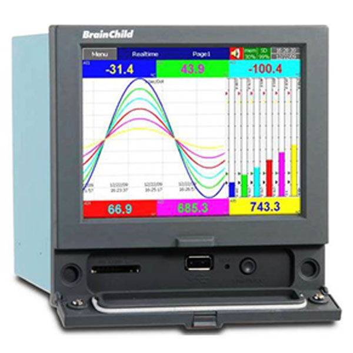
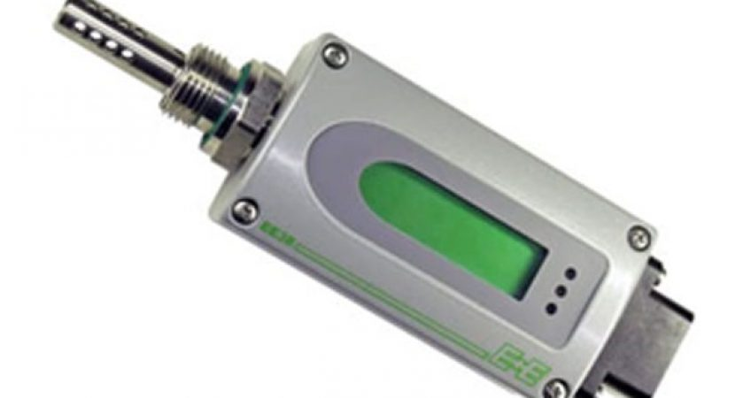
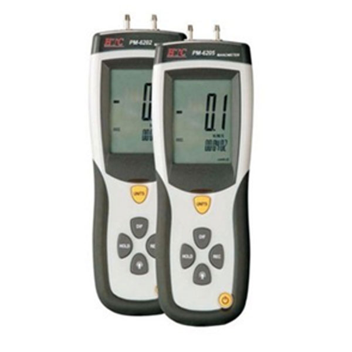
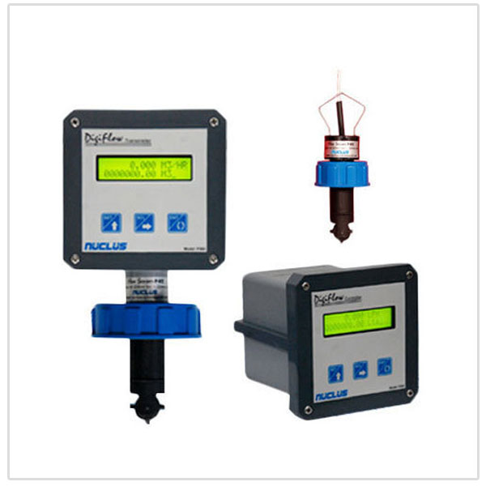

Industries & Applications
Engineered to meet the stringent safety, sanitary, regulatory, and calibration requirements of diverse industrial operating sectors.
Pharmaceuticals, Biotech & Cleanrooms
Pharmaceutical manufacturing mandates strict compliance with US FDA 21 CFR Part 11 electronic records, cleanroom overpressure monitoring, and sterile temperature control. We supply India’s leading pharmaceutical groups including Zydus, Torrent Pharma, Cadila, Intas, Alembic, Alkem, Macleods, and Piramal.
- • Brainchild PR Series Paperless Recorders (FDA 21 CFR Part 11 Audit Trail)
- • Magnehelic Differential Pressure Gauges for AHU Filter & Isolation Rooms
- • Duplex Class A RTD Pt100 Sensors with sanitary tri-clamp thermowells
- • Elitech USB & Portable Temperature / Humidity Cold Chain Loggers


Power Generation & Electrical Utilities
Thermal, hydro, and sub-station transformers require continuous preventive monitoring to avoid cataclysmic insulation breakdown. We supply Bharat Heavy Electricals Limited (BHEL) and Torrent Power Limited with precision moisture-in-oil transmitters and bearing temperature sensors.
- • CARE-EE-EE381 Online Moisture in Oil Transmitters (Transformer Water Activity)
- • Float and Board Level Indicators for bulk furnace and diesel fuel tanks
- • Heavy Duty Liquid Filled Bourdon Tube Pressure Gauges (up to 1600 bar)
- • Head-mounted 4-20mA loop powered transmitters with galvanic isolation
Aerospace, Defense & Scientific Labs
When measurements cannot tolerate the slightest deviation, premier national research agencies rely on Care Process Instruments. Our clientele includes the Indian Space Research Organisation (ISRO), the Institute for Plasma Research (IPR), and the Electrical Research and Development Association (ERDA).
- • Master Calibration Pressure Instruments & Dry Well Calibration Baths
- • Digital Differential Pressure Manometers with 0.1 Pa resolution
- • Special noble metal thermocouples (Type R, S, B up to 1600°C)
- • High-accuracy vacuum gauges and multi-channel online loggers


Food, Beverages & Cold Chain Logistics
From beverage syrup batching to cold chain transit monitoring, accuracy ensures freshness and eliminates product spoilage. We serve prominent brands such as Hindustan Coca-Cola Beverages, Tata Coffee Limited, and Vadilal Industries Limited.
- • PTFE-Lined Electromagnetic Flow Meters (Zero obstruction, sanitary design)
- • Side-Mounted Stainless Steel Level Switches for mixing tanks
- • Elitech Single & Multi-Use USB Temperature Loggers for refrigerated cargo
- • Non-contact Infrared Thermometer Guns for surface inspection